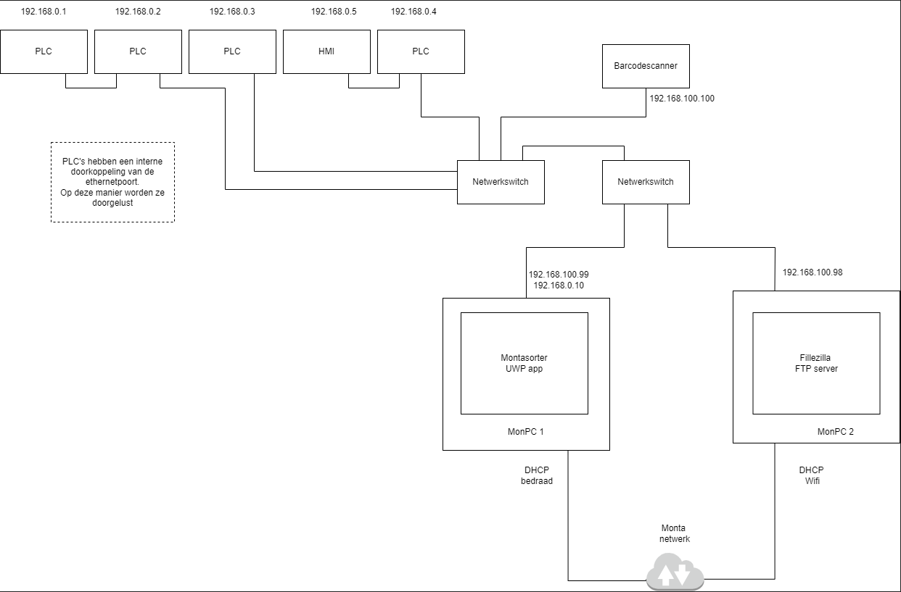

Monta Sorteermachine
Naast de standaard uitrol van de computer met de UWP-app Monta Sorteer wordt er nog een 2de computer gebruikt voor de FTP-functie.

De computer met de UWP-app Monta Sorteer.
- Deze computer kan op de gebruikelijke manier m.b.v. Intune Autopilot worden uitgerold.
- De computer krijgt een tweede netwerkinterface welke we moeten in stellen met een vast IP-Adres.
- Als we de computer hierna in de groep "Intune-Devices - Sorteermachine" plaatsen wordt de UWP-app vanzelf geïnstalleerd.
- Ook krijgt de computer een kioskmode.
De computer met de FTP-functie
- Ook deze computer kan op de gebruikelijke manier m.b.v. Intune Autopilot worden uitgerold.
- De computer krijgt een tweede netwerkinterface welke we moeten in stellen met een vast IP-Adres.
- Hierna kunnen we Filezilla-server installeren en configureren dat deze alleen uit het interne netwerk verzoeken mag ontvangen.
- Dit moeten we ook in de lokale firewall regelen.
- De andere netwerkinterface (of wifi) gebruiken we om een teamviewersessie op te kunnen zetten.